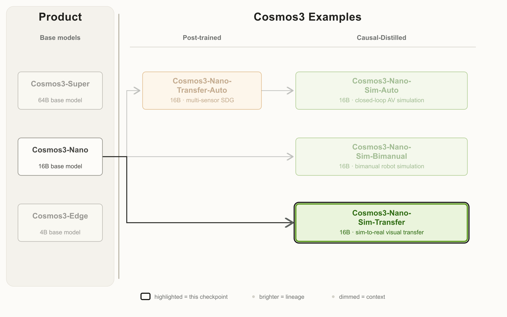

Cosmos3-Nano-Sim-Transfer：状态不动，观察换域
身份和来源
原卡明确 HF / GitHub 2026-10-20 发布，V1.0；归入 NVIDIA 世界模型支线，不是新的通用语言模型正代。许可证为 OpenMDW1.1，基座为 Cosmos3-Nano，架构 MoT，卡片参数字段 16B。

问题：逼真观察不应偷偷改写物理状态
原始仿真往往易于验证却视觉域不够真实；纯视频生成逼真但难保证接触、遮挡和标签。该模型折中为：仿真器仍做物理状态演化，渲染控制送入生成器，生成器返回策略看到的 RGB。
这种职责分离很关键。仿真标注描述的是底层场景，不是生成像素已经无条件保证准确；目标边界、遮挡与细节仍需检查。不能因为模型输入了 segmentation 就声称生成后的 mask 一定是真值。
方法与输入输出契约
- 从 Cosmos3-Nano 后训练，让模型接受 simulator 控制视频与文本。
- 因果蒸馏为少步模型；按小 latent-frame 块生成，复用历史 cache，并继续接受新控制。
- 在 Isaac Lab 等环境里闭环使用观察，物理状态与 ground truth 继续由外部仿真器维护。
支持 depth、segmentation、edge、blur 四种控制。输出视频最多 600 帧、480p、播放 30fps。单 GB200 约 24.5fps 的吞吐与播放速度不同；“可批量集成最多 8 环境”是接口/设计说明，不证明 8 路每路都能 30fps 实时。

官方说明：控制在上、生成 RGB 在下，左右分别展示深度与分割条件。这是选择样例，不是全测试集或真实任务成功率。
控制遵从：改善是真实的，但有代价
PAI-Bench-C / TransferBench 中，把生成结果重新映射回控制模态再比较。下表为原卡全部控制指标：
| 模型 | DOVER ↑ | Seg mIoU ↑ | Blur SSIM ↑ | Edge F1 ↑ | Depth SI-RMSE ↓ |
|---|---|---|---|---|---|
| Cosmos3-Nano | 10.359606 | 0.643263 | 0.855906 | 0.214024 | 0.842346 |
| Sim-Transfer | 10.175942 | 0.737760 | 0.886650 | 0.340696 | 0.619426 |
控制指标四项改善，DOVER 略降。深度是 scale-invariant RMSE，不是绝对米制重建误差；mIoU 是像素区域交并比，不是抓取成功率。
| 模型 | Prompt following ↑ | Video quality ↑ | Perceptual drift ↓ | Temporal Sampson ↓ |
|---|---|---|---|---|
| Cosmos3-Nano | 7.184583 | 4.929583 | 0.006349 | 0.081045 |
| Sim-Transfer | 7.025417 | 4.950833 | 0.006504 | 0.096544 |
Prompt、drift、时序几何都不是全面提升。我的判断是：更强控制可能值得部分感知质量代价，但是否改善策略训练必须单独测，不能由几张演示图决定。
速度、数据与复现
| 单 GPU，480p 吞吐 | fps |
|---|---|
| GB200 | 24.5 |
| H100 | 14.6 |
| H200 | 14.9 |
| H20 | 4.0 |
| RTX Pro 6000 | 8.3 |
后训练视频量卡片只给“少于 1 万小时”，文本是宽泛量级；1.3B data points / 393 entries 是重复的基础家族说明，不能当作本专项新增样本。需要固定输入控制分辨率、帧数、硬件、采样配置、checkpoint revision 才能复现吞吐；本轮不启动容器、不加载权重。
一手链接与关联
📊 相关可视化：中文 Poster